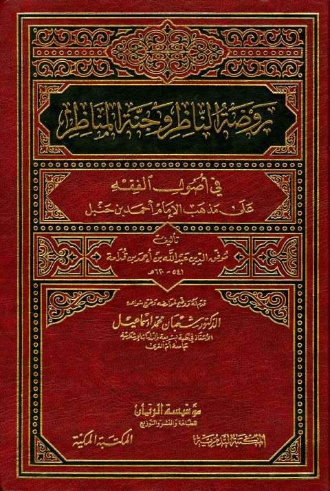

Downloads need an internet connection.
روضة الناظر وجنة المناظر في أصول الفقه على مذهب الإمام أحمد بن حنبل- المكتبة المكية
Authors: عبد الله بن قدامة المقدسي
Editors: شعبان محمد إسماعيل
Publishers: مؤسسة الريان المكتبة المكية المكتبة التدمرية
**▫️ العنوان: روضة الناظر وجنة المناظر في أصول الفقه على مذهب الإمام أحمد بن حنبل- المكتبة المكية** ▪️ المؤلف: #موفق_الدين_عبد_الله_بن_أحمد_بن_قدامة ▫️ المحقق: #شعبان_محمد_إسماعيل ▪️ الناشر: #المكتبة_المكية • #المكتبة_التدمرية • #مؤسسة_الريان ▫️ تاريخ النشر: 1419هـــ 1998م ▪️ بلد النشر: الرياض، #السعودية • مكة، #لبنان • بيروت ▫️ الطبعة: 1 ▪️ عدد الأجزاء: 2 ▫️ الصفحات: 1130 ▪️ نوع الوعاء: #كتاب ▫️ التصنيف الرئيسي: #الفقه_وأصوله ▪️ التصنيف الفرعي: #أصول_الفقه ۪